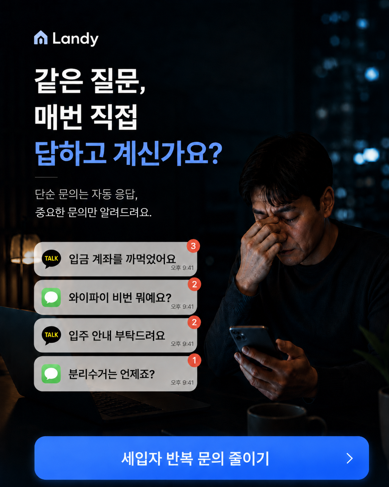

입금 계좌를 까먹었어요
등록된 계좌 안내
임차인 문의 대응 자동화
반복되는 사소한 문의는 등록한 답변으로 자동으로 답변하고, 임대인이 봐야 할 문의만 따로 남깁니다.

답은 빠르게.
판단은 임대인에게.
단순 문의
계좌, 주차, 분리수거처럼 이미 답이 있는 질문은 임대인이 매번 다시 쓰지 않아도 되게 만듭니다.
호실별 안내
와이파이, 현관 비밀번호, 주차 위치처럼 호실마다 달라지는 정보는 한 답변으로 뭉개지지 않게 구분합니다.
중요 문의
누수, 고장, 소음, 민원처럼 상황 판단이 필요한 문의는 자동 응답보다 임대인 확인을 우선합니다.